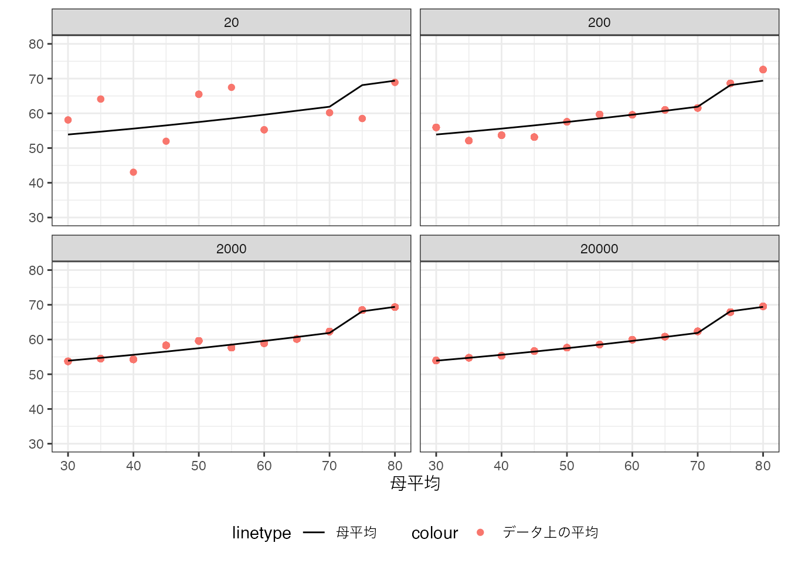

2 母分布
2.1 頻度論
少数事例の集計が引き起こす問題を正確に理解するために、頻度論と呼ばれる概念的枠組みを導入します1。
まず、「自分と同じ課題に取り組む他の研究者達」を想像してください。 この研究者達は、あなたと同じ社会を対象に同じ手法を用いて分析しています。 ただし共通のデータではなく、独立して収集した異なるデータを用いるとします。 このような独立した研究者達は、あなたと同じ分析結果に到達するでしょうか？
簡単な理科の実験であれば、到達することは可能です。 例えば水は、「水に不純物を入れない」、「大気圧が通常」などの実験の手続きを守れば、「誰がやっても」100度で沸騰します。 このため誰がやっても同じ結果が導かれる”科学的事実”に合意することは容易です。
対して現実社会における多くの現象について、独立した研究者が同じ結論に到達することは困難です。 なぜならば、分析に用いる事例が異なるためです。 ほとんどの応用で、独立して収集したデータが、研究者間で完全一致する可能性はほぼゼロです。
事例の偏りは、結論の不一致をもたらします。 ある研究者には、公園に近い物件の取引事例ばかりが、“偶然”集まってくるかもしれません。 このような研究者のデータで計算された取引価格の平均値は、他の研究者と比べて、上振れる可能性が高くなります。 このため要約した値であったとしても、研究者間で同じ値に合意できません。
人々が同じ結果を観察できない、という問題は深刻です。 「独立した個人や組織が同じ結果を観察できるので推定結果を事実として認定する」、という強力な枠組みが活用できないからです。 この問題に対処するためには、何らかの概念的な枠組みが必要となります。
事例: 報道機関による世論調査
分析結果の不一致の典型例として、報道機関による世論調査が挙げられます。 複数の機関による調査結果が、毎月公開されますが、その結果は各社で異なっています。 理由は複数考えられますが、最も単純なものは、調査対象となる回答者が異なるためです。 典型的な世論調査では、各社が独立して電話番号をランダムに発生させるなどの方法で、1000-2000名ほどの回答者を極力ランダムに選んでいます。 しかしながら、異なる調査に同じ人が回答する確率は、非常に低くく、必然的に調査結果も異なります。
2.2 コンセプト: 母分布とサンプリング
分析結果の不一致の問題を適切に論じるために、母分布という分析概念を導入します。 母分布は、すべての研究者に共通した正答(推定対象)と各々のデータから得られる回答(推定値)を、分離することを可能にします。
母集団とサンプリング
以下を想定する
私たちが手にしているデータは、母集団という無数の事例の集団から、選ばれた(サンプリングされた)限られた構成されている
母集団の全ての事例を用いて算出された値を推定対象と呼ぶ
サンプリングされたデータから算出された値を推定値と呼ぶ
本ノートでは、事例は完全ランダムに選ばる (ランダムサンプリング) を想定します。
私たちが得られる推定値は、このランダムに選ばれた一部の事例のみから得たものであり、推定対象とは一致しません。
例えば日本における男女間家事分担格差の実態把握を行いたいとします。 この場合、母集団は日本の家計全体となります。 もし日本の家計全体における家事負担を把握できれば、推定対象は容易に回答可能です。 しかしながら私たちのデータは、家計全体の一部であり、そこから得られる推定値（例えばデータ上の平均的な家事分担）は、推定対象(日本全体の平均的な家事負担)とは異なります。 このため日本全体では「女性の方が男性よりも家事負担が大きい」としても、データに含まれる事例が偶然偏り、「夫の家事負担がより大きい」という推定値を誤って示す可能性があります。
母集団として、仮想的な集団を想定することもできます。 例えば、あるコンビニのレジデータに、ある日の全ての来客者について、購入金額が全て記録されているとします。 この場合、現実の来客者全てが記録されているため、母集団は存在しないと考えることも可能です。 一方で、その日にコンビニを訪れた顧客は、潜在的な顧客の一部であると想定することもできます。 皆さんも、よく利用するコンビニであったとしても、毎日は利用しないのではないでしょうか？ この場合、あなたは母集団である潜在的な顧客には属しますが、実際のデータには記録されない (偶然コンビニを利用しなかった) 可能性があります。
2.2.1 母平均
母集団に対しては、データの要約と同様の議論が適用できます。 母集団においても、\(X\)が同じで合ったとしても、\(Y\) の値が異なることが想定されます。 このため代表的な\(Y\)の値について、論じることが現実的です。
本ノートでは引き続き、平均値について論じていきます。 母集団における平均値を以後、母平均と呼んでいきます。
母平均
\(Y\) の母集団における平均値
データ上での平均値とは異なり、母平均を正確に知ることは不可能です。 研究者は母集団を直接観察できないためです。
知ることができない母平均を、手元にある限られたデータから推測するのが、本ノートの中心的な挑戦となります。 データが母集団の一部であり、観察できていない事例が存在する以上、データ上の平均値と母平均は一致しません。 またデータが異なるので、独立した研究者間で、平均値について厳密な合意はできません。
2.3 数値例
以上の概念を明確にするために、簡単な数値実験を行います。 今、4名の研究者が独立して20事例を集めたとします。 各事例について、取引価格 \(Y\) と 部屋の広さ \(X\) がデータから観察できるとします
母分布は以下のように設定しています。
部屋の広さは、\(X\in\{30,35,40,..,80\}\) が同じ割合で存在
取引価格は、広さが70-75平米の間、急上昇する
以下の図は、4名の研究者が手にするデータと平均値を図示しています。
平均値について、研究者間で大きな違いが見られます。
この図に母平均を上書きすると以下のようになります。 ただし図を簡略化するために、各事例の値は排除します。
重要な点として、母平均とデータ上の平均は乖離していることを確認してください。 また乖離の仕方は、研究者によって異なります。 言い換えるならば、推定対象である母平均は全員共通である一方で、推定値であるデータ上の平均値は異なっています。
2.4 大数の法則
母平均を知る”唯一”の方法は、各\(X\)の組み合わせについて、ランダムサンプリングされた無限大の事例数で平均値を計算することです。 これは大数の法則が成立し、データ上の平均値 (推定値) と母平均 (推定対象) が一致するためです。
一致性
無限大の事例数をもつランダムサンプリングデータにおいて、計算された\(Y\)の平均値は、母平均と一致する。
以下では、事例数を20,200,2000,20000に随時変更した数値例を示しています。

20事例では、母平均とデータ上の平均値が大きく乖離してますが、20000事例ではほぼ一致していることが確認できます。
一致性は重要な理論的性質ですが、実践上の含意は限られています。 多くの応用において、大量の\(X\)の組み合わせが発生する一方で、事例数は限られています。 このため十分な事例数を確保することができず、小規模事例の集計の問題と向き合う必要があります。
2.4.1 信頼区間
一致性は、データ上の平均値と母平均が一致を、無限大の事例数においてのみ保証します。 現実の事例数では、データ上の平均値と母平均は一致せず、研究者間でのばらつきも残ってしまいます。
実際のデータ分析では、推定結果は信頼区間と共に示すことが一般的です。 信頼区間とは、一定の確率 (初期値では\(95\%\)) で、母平均を含む区間です。 例えば200事例を用いて計算した平均値の信頼区間は以下です。
点で推定値、横線で95 \(\%\) 信頼区間、縦線が母平均を示しています。
本数値例では、4名の研究者全員が、母平均を含む信頼区間を獲得できています。
同じ数値例を、“100名の研究者”分実施した結果は以下です。
縦軸は研究者の名前 (ID) を示しています。 「不幸にも」母平均を含まない信頼区間が推定されてしまった研究者は、赤字で示しています。 100名中6名 (概ね\(95\%\))は、このような不幸に見舞われており、信頼区間の想定と整合的です。
実際の応用では、研究者自身は、自分が運の悪い \(5\%\) となるか、それとも幸運な \(95\%\) になるのかは、判断できません。 通常は、「\(5\%\) のリスクは低い」、として自身が計算した信頼区間の中に真の値が含まれているとして、結論を論じます。
このリスクを変更することは容易です。たとえばリスクを\(0.5\%\)に変更した場合の\(99.5\%\) 信頼区間は以下です。
「不幸な」研究者は100名中1名のみとなりましたが、その代償として信頼区間が拡大しています。 すなわち結論を不明確にする代わりに、ミスリードな主張をするリスクを減らしています。
注意が必要なのは、「不幸な」研究者が発生する確率を\(0\%\) にすることは一般に不可能だという点です。 「\(100\%\) 信頼区間」を計算しようとすると、区間の幅は無限大になります。
信頼区間を正確に推定することは、一般に極めて困難です。 このため多くの実践で、近似的な信頼区間を算出し、報告します。 この近似的な算出は、事例数が「十分にある」ことを前提としています。 多くの数値実験から、具体的な事例数として150事例以上を要求されています2。
定義: 信頼区間
一定の確率 (初期値では\(95\%\)) で、母平均を含む区間
頻度論以外にはベイズ法と呼ばれる枠組みもあります。Lin (2024)などを参照ください。↩︎
事例数と平均値、信頼区間の詳細な関係性については、Chernozhukov et al. (2024) の1.2章と1.A章などを参照ください↩︎